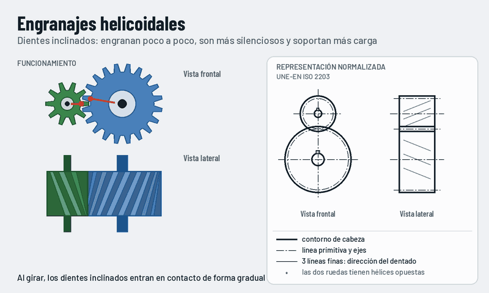

Engranajes helicoidales
Los dientes están inclinados respecto al eje. Entran en contacto poco a poco, por eso son más silenciosos y soportan más carga que los rectos.

Qué observar
- En la vista lateral se ve la inclinación de los dientes.
- Las dos ruedas tienen la hélice en sentidos opuestos: una a derechas y otra a izquierdas.
- El contacto empieza en un extremo del diente y avanza hacia el otro.
Cómo se representa
- Se dibujan igual que los de dientes rectos.
- En la vista paralela al eje, tres líneas finas indican la dirección del dentado.
- Cada rueda lleva sus líneas inclinadas en sentido contrario.
Ventajas e inconvenientes
- Más silenciosos y suaves.
- Hay más dientes en contacto: soportan más carga.
- Producen empuje axial: necesitan rodamientos que lo soporten.
Dónde lo encontramos
- Cajas de cambios de coches.
- Reductores industriales.
- Bombas y compresores.